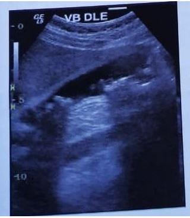

Questão 1 · Tratamento · Investigação Complementar · 4000186516Mulher, 62 anos, comparece à consulta queixando de plenitude pós-prandial e saciedade precoce há 3 meses. Nega perda de peso, vômitos, dor epigástrica ou alteração na cor ou consistência das fezes. Exame físico sem alterações. A conduta mais adequada para este paciente é:
A Iniciar inibidor da bomba de prótons para tratar síndrome dispéptica.
B Prescrever procinético para tratar síndrome dispéptica.
C Iniciar IBP e procinético e solicitar endoscopia digestiva alta.
D Solicitar endoscopia digestiva alta e prescrever procinético.
Questão 2 · Indicações de Pesquisa e Tratamento · Tratamento · Esquemas de Tratamento · 4000185589Paciente do sexo feminino, 28 anos de idade, hígida, comparece à consulta de atenção primária devido a queixa crônica de dor epigástrica, moderada, em queimação associada à saciedade precoce. Relata que a dor é intermitente e piora com alguns alimentos como café, frituras e refrigerantes. Nega perda de peso, vômitos ou história familiar de Câncer. Durante o exame físico não foram encontradas alterações. Com relação ao quadro clínico descrito acima, assinale a alternativa CORRETA que apresenta a conduta mais apropriada.
A Dadas as etiologias mais prevalentes para a apresentação acima, é imperioso solicitar beta HCG e iniciar tratamento empírico para parasitoses intestinais com a combinação de albendazol e nitazoxanida
B Deve-se avaliar pesquisa de H. pylori e, em caso de positividade, efetuar tratamento de erradicação, por exemplo, com claritromicina, amoxicilina-clavulanato e omeprazol por 14 dias.
C Devido aos sinais de alarme apresentados pela paciente é indicada a realização de endoscopia digestiva alta para diagnóstico diferencial, com coleta de biópsias seriadas do estômago e duodeno.
D É recomendada a terapia nutricional nesse caso com restrição dos alimentos exacerbadores dos sintomas associada a teste de eliminação de glúten, lactose e FODMAPs (carboidratos não digeríveis) da dieta.
Questão 3 · Tratamento · 4000167917Homem, 32 anos, comparece a consulta queixando de plenitude pós-prandial e saciedade precoce há 3 meses. Nega perda de peso, vômitos, dor epigástrica ou alteração na cor ou consistência das fezes. Exame físico sem alterações. A conduta mais adequada para este paciente é:
A Iniciar inibidor da bomba de prótons para tratar síndrome dispéptica.
B Prescrever procinético para tratar síndrome dispéptica.
C Iniciar IBP e procinético e solicitar endoscopia digestiva alta.
D Solicitar endoscopia digestiva alta e prescrever IBP.
Questão 4 · Indicações de Pesquisa e Tratamento · Tratamento · Esquemas de Tratamento · 4000166368Leia o caso clínico a seguir. Paciente do sexo feminino, de 20 anos, com dispepsia há seis meses, sem tratamentos prévios. Foi submetida a endoscopia que evidenciou gastrite antral enantematosa leve. A avaliação histopatológica demonstrou presença de Helicobacter pylori em pequena quantidade no antro gástrico. Neste caso, a conduta inicial mais apropriada é:
A Lanzoprazol 30 mg/1x/dia, por 28 dias.
B Lanzoprazol 30 mg + domperidona 10 mg/2x/dia, por 28 dias.
C Lanzoprazol 30 mg/2x/dia + Claritomicina 500 mg/2x/ dia + Amoxicilina 1000 mg/2x/dia, por 14 dias.
D Lanzoprazol 30 mg/2x + Amoxicilina 1000 mg/2x + levofloxacina 500 mg/1x, por 10 dia
Questão 5 · Fase Gástrica da Digestão · Anatomia e Fisiologia Gastroduodenal · 4000173403São estimulantes da secreção ácida gástrica:
A Gastrina, histamina e acetilcolina.
B Colecistocinina, gastrina e acetilcolina.
C Colecistocicina, gastrina e atropina.
D Gastrina, peptídeo intestinal e acetilcolina.
Questão 6 · Investigação Complementar · 4000173050Mulher com 42 anos refere dor epigástrica há 2 meses que piora após as refeições, associada a perda ponderal de 10 quilogramas que ela atribui ao tempo quente e algumas caminhadas. Qual sua próxima conduta mais apropriada?
A Iniciar terapia com inibidor de bomba de prótons em dose dobrada por oito semanas para dispepsia.
B Solicitar teste respiratório para detecção da infecção pelo H. pylori.
C Considerar iniciar neuromodulador para dispepsia funcional.
D Solicitar uma endoscopia digestiva alta para avaliação.
E Iniciar terapia com inibidor de bomba de prótons em dose padrão e solicitar sorologia para H. pylori.
Questão 7 · Tipos Especiais de Gastrite · 4000172822É uma doença rara, adquirida, pré-maligna, caracterizada por pregas gástricas gigantes no fundo e no corpo do estômago, dando à mucosa uma aparência de pedras de pavimentação ou cerebriforme. O exame histopatológico revela hiperplasia foveolar (expansão das células mucosas superficiais), com ausência de células parietais:
A Síndrome de Mallory-Weiss.
B Síndrome de Zollinger-Elisson.
C Gastropatia hipertrófica hipoproteinêmica.
D Lesão gástrica de Dieulafoy.
Questão 8 · Divisão Anatômica e Funcional do Estômago · 4000171279Assinale a alternativa com a correta associação celular funcional do estômago.
A Célula G - produz pepsina.
B Célula D - produz somatostatina.
C Célula parietal - produz gastrina.
D Célula enterocromafin - produz peptídeo intestinal vasoativo.
Questão 9 · Investigação Complementar · 4000151653Paciente de 77 anos, masculino, tabagista, procurou atendimento na Unidade Básica de Saúde (UBS) por queixa de plenitude pós-prandial associado à epigastralgia sem irradiação há 4 meses. Refere emagrecimento não quantificado no período. Qual a melhor conduta?
A Tratar o paciente empiricamente para Helicobacter pylori.
B Medicar o paciente com inibidor de bomba de prótons e reavaliar em 6 meses.
C Medicar o paciente com inibidor de bomba de prótons e dar alta para o paciente.
D Medicar o paciente com inibidor de bomba de prótons e solicitar uma Endoscopia Digestiva Alta.
Questão 10 · Divisão Anatômica e Funcional do Estômago · 4000145631São os ramos diretos mais comuns do tronco celíaco:
A Artéria gástrica esquerda, artéria esplênica, artéria hepática comum.
B Artéria gástrica direita, artéria esplênica, artéria hepática comum.
C Artéria mesentérica superior, artéria esplênica, artéria hepática direita.
D Artéria gástrica esquerda, artéria esplênica, vasos curtos.
Questão 11 · Def inição e Sintomas · Investigação Complementar · 4000145226A dispepsia é definida como um distúrbio da digestão caracterizado por sintomas no trato gastrointestinal como dor, queimação ou desconforto na região superior do abdômen, porém seu mecanismo siopatológico ainda é desconhecido e configura-se como uma queixa frequente entre os idosos. Sobre o tema, é correto afirmar que.
A Os idosos dispépticos devem ser tratados com antibióticos e inibidor de bomba de prótons, sendo desnecessário investigação específica.
B As causas da dispepsia, geralmente são investigadas a partir da endoscopia, sendo que a endoscopia alta é um exame de primeira linha na investigação da dispepsia em idosos.
C Constipação, hipovitaminoses e acidose metabólica são achados que podem ser evidenciados em pacientes com dispepsia.
D Os idosos dispépticos devem ser desestimulados à ingestão hídrica.
Questão 12 · Divisão Anatômica e Funcional do Estômago · 4000133305De qual artéria se origina a artéria gastroepiplóica direita:
A Hepática.
B Esplênica.
C Gástrica direita.
D Celíca.
E Gastroduodenal.
Questão 13 · Def inição e Sintomas · Tratamento · Investigação Complementar · 4000133164Homem com 61 anos vem à consulta com quadro de plenitude pós-prandial e saciedade precoce nos últimos 3 meses. Nega perda de peso, vômitos, pirose ou epigastralgia. Nega alterações na consistência, cor ou volume das fezes. Usa losartana 50mg para hipertensão arterial há 5 anos. Ao exame físico, apresenta índice de massa corpórea de 31 kg/m², encontra-se em bom estado geral, normocorado, eupneico, anictérico. Ausculta cardiopulmonar normal. PA:135x80 FC:85 bpm FR:18 irpm. Abdome com ruídos hidroaéreos presentes, globoso, timpânico, sem massas palpáveis ou visceromegalias, sem sinais de ascite. Sem linfonodomegalias. Pensando no diagnóstico de síndrome dispéptica, baseado nos critérios de Roma IV, deve-se:
A Prescrever inibidor da bomba de protóns associado a procinético para prova terapêutica.
B Solicitar Endoscopia digestiva alta e iniciar procinético para síndrome do desconforto pós prandial.
C Solicitar endoscopia digestiva alta e, a partir do resultado, tratar Helicobacter pylori como prova terapêutica.
D Tratar parasitose intestinal e, caso os sintomas persistam, iniciar inibidor da bomba de prótons.
Questão 14 · Def inição e Sintomas · Tratamento · 4000131271Leia o caso clínico a seguir. Paciente jovem, do sexo feminino, com sintomas recentes de dispepsia funcional, sem nenhum sinal de alarme, apresenta teste respiratório positivo para Nesse caso, qual conduta deve ser realizada?
A Solicitar endoscopia digestiva alta (EDA) com biópsia para avaliar o grau de atividade inflamatória antes de iniciar tratamento.
B Iniciar tratamento com inibidor de bomba de prótons e, após oito semanas, solicitar endoscopia digestiva alta (EDA) caso não apresente remissão dos sintomas.
C Tratar imediatamente a infecção pelo
D Tratar imediatamente a infecção pelo
Questão 15 · Investigação Complementar · 4000127761Senhora de 75 anos, branca, procura UPA com queixa de dor epigástrica há 4 meses. Ela relata que inicialmente melhorava com uso de ranitidina, mas há cerca de 1 mês passou a apresentar vômitos diários. Queixa-se também de perda de peso, halitose e mal estar geral. Diante do exposto acima, assinale a alternativa correta na condução do caso:
A Orientar uma alimentação mais branda e solicitar uma endoscopia digestiva alta, mantendo a ranitidina.
B Sabendo que o omeprazol é mais efetivo no tratamento da dispepsia, deve ser indicado seu uso associado a domperidona. Solicitar endoscopia digestiva alta após quatro semanas de tratamento medicamentoso.
C O hidróxido de alumínio tem efeito rápido, devendo ser indicado nesta fase aguda, associado a orientação alimentar e retorno, se não houver melhora, para reavaliação em quatro semanas.
D Dobrar a dose da ranitidina, associar domperidona e deixar antiácido se ainda apresentar persistência da plenitude.
Questão 16 · Anemia perniciosa · Gastrite Autoimune · 4000124116Paciente, 34 anos, submete-se a endoscopia digestiva alta na qual se observa redução do pregueado mucoso no corpo gástrico. Exame anatomopatológico mostra gastrite crônica autoimune. Esse achado está frequentemente associado a:
A anemia perniciosa.
B hipercloridria.
C infecção pelo H. pylori.
D FAN positivo.
E linfoma gástrico de células B.
Questão 17 · Gastroparesia · Tratamento · 4000116664Um paciente tem diagnóstico de gastroparesia. Dentre as drogas abaixo qual poderá ser utilizada no tratamento desse paciente?
A Metilprednisolona
B Aprepitanto
C Escopolamina
D Lorazepam
E Eritromicina
Questão 18 · Síndrome Dispéptica · 4000111063Mulher, 58 anos, sem comorbidades, foi encaminhada para ambulatório médico especializado por apresentar, esporadicamente, há dois anos, após aposentadoria, quatro episódios de dor em queimação epigástrica e retroesternal desencadeada pela ingesta concomitante de macarronada vermelha e vinho durante as viagens de férias. Anteriormente havia sido avaliada na atenção básica em função dos sintomas e do ganho de peso, onde os exames laboratoriais solicitados estavam dentro da normalidade. A ultrassonogra a de abdômen (vide figura) identi cou litíase biliar. Qual o plano terapêutico mais apropriado neste momento?

A Inibidor da bomba de prótons, endoscopia, seguida de colecistectomia.
B Orientação comportamental e acompanhamento na atenção básica.
C Endoscopia, inibidor da bomba de prótons e fundoplicatura.
D Endoscopia, colecistectomia e fundoplicatura de oportunidade.
Questão 19 · Anemia perniciosa · Causas de anemia megaloblástica · Gastrite Autoimune · 4000074702Homem, 34 anos de idade, sem comorbidades, queixa-se em consulta de fraqueza e astenia há cerca de três meses e dor abdominal em queimação há anos, fazendo uso de omeprazol 20mg. Nega uso de drogas. Etilismo social (2 copos de cerveja no nal de semana). Trouxe hemograma: Hb: 7,0; Ht: 20,9; VCM: 106; HCM: 35,7; Leucócitos 2500; Plaquetas 104.000. Ao exame: pressão arterial: 100 x 70 mmHg; frequência cardíaca: 99 batimentos/minuto; saturação arterial: 94; frequência respiratória: 20 movimentos/minuto; REG, alerta e orientado, hipocorado 2+, anictérico. Aparelho cardiopulmonar sem alterações. Abdome: desconforto abdominal em região epigástrica. Quais os diagnósticos?
A Gastrite atrófica e anemia perniciosa
B Úlcera péptica e anemia ferropriva
C Dispepsia funcional e anemia mista
D Tumor neuroendócrino e anemia hemolítica
Questão 20 · Fase Duodenal da Digestão · Fase Gástrica da Digestão · 4000067817Polipeptídeo aminoácido-linear que ocorre em várias formas moleculares bioativas. Está presente em células endócrinas (células I) do tipo aberto, localizadas nas glândulas mucosas do jejuno e duodeno. Liberado após a ingestão de alimentos por produtos da digestão de gorduras e proteínas dentro da luz intestinal. Sua liberação é inibida pela tripsina. Suas ações siológicas são: estimulação da contração da vesícula biliar e secreção de enzimas pancreáticas. Estas definições se referem a qual tipo de hormônio gastrointestinal?
A Secretina
B Gastrina
C Hisitidina
D Somatostatina
E Colecistoquinina
Questão 21 · Gastroparesia · 4000061857Um homem de 45 anos queixa-se de episódios de vômitos paroxísticos e recorrentes há 6 meses, sem outras manifestações associadas. É portador de hipertensão arterial sistêmica, diabetes mellitus tipo 2, retinopatia diabética, gota e asma brônquica. Faz uso contínuo há 2 anos de enalapril, metformina e beclometasona inalatória. Ao exame físico, apresenta PA: 170X95mmHg, FC: 58bpm, FR: 15ipm, SpO₂: 98%. A ausculta respiratória revela raros sibilos expiratórios difusamente. Sem outras anormalidades ao exame físico. Exames de laboratório: creat: 1,4mg/dL (clearance de creatinina 52mL/kg/1,73m²); ur: 42mg/dL; Na: 131mEq/L; ácido úrico: 8,9mg/dL; GJ: 134mg/dL; HgA1c: 8,2%. Assinale, dentre as alternativas a seguir, a que apresenta o diagnóstico MAIS PROVÁVEL para os vômitos apresentados pelo paciente.
A Câncer gástrico.
B Efeito colateral da metformina.
C Gastroenterite aguda.
D Gastroparesia diabética.
Questão 22 · Def inição e Sintomas · Tratamento · Investigação Complementar · 4000041750Homem de 65 anos vem à consulta com queixa de dispepsia. Relata que os sintomas iniciaram há 3 meses. Nega sinais de alerta, como disfagia, hematêmese, melena, perda de peso ou vômitos incoercíveis. A conduta a ser adotada é:
A prescrever inibidor de bomba de próton por 30 dias e reavaliar ao final desse período.
B solicitar endoscopia digestiva alta.
C prescrever inibidor de bomba de próton e domperidona por 30 dias.
D prescrever bloqueador H2 por 30 dias.
E orientar os hábitos alimentares e evitar medicar o paciente.
Questão 23 · Síndrome Dispéptica · 4000039923Jovem, 25 anos, comparece à consulta com queixa de saciedade precoce e plenitude pós-prandial. Relata recorrência desse quadro há mais de 3 meses. Refere uso de antiácidos sem melhora significativa dos sintomas. Nega queimação epigástrica, emagrecimento, sinais de sangramento digestivo ou histórico de câncer. Relata estar terminando sua graduação, na fase de elaboração do trabalho de conclusão, por isso, tem se alimentado mal e aumentado a ingesta de café. Exame físico normal, com leve dor a palpação em epigástrio. Segundo as recomendações do ROMA IV, a conduta mais adequada para este jovem seria:
A Fracionar as refeições, diminuir teor de gorduras, reduzir ingesta de café e procinéticos.
B Fracionar as refeições, diminuir teor de gorduras, reduzir ingesta de café e IBP.
C Fracionar as refeições, reduzir ingesta de café, associar IBP e procinéticos.
D Solicitar endoscopia digestiva alta, para descartar doença estrutural.
Questão 24 · Fase Gástrica da Digestão · Anatomia e Fisiologia Gastroduodenal · 4000032737Os hormônios gástricos têm, cada um, funções importantes e características no que diz respeito ao estado nutricional humano. O hormônio sintetizado pelas células principais do estômago e que reduz o desejo de ingerir alimentos denomina- se:
A Leptina.
B Grelina.
C Gastrina.
D Histamina.
E Basilina.
Questão 25 · Síndrome Dispéptica · 4000028891""Paulo, 35 anos anos de idade, procura atendimento com seu médico de família na UBS Santos Silva, que ca próxima à sua casa. Conseguiu atendimento para o dia seguinte. Chegou à UBS e passou pela triagem com a Técnica Maria, que reforçou a necessidade de acompanhar a pressão arterial. Enquanto aguardava na recepção o atendimento do seu médico. Dr. Guilherme, foi abordado pela enfermeira Juliana que reforçou a presença dele na próxima consulta de sua esposa, que está grávida. Paulo relata que tem trabalhado muito, mas irá se programar, visto que o bebê chega em 3 meses. Dr. Guilherme chama Paulo, na recepção, e após cumprimento afável Dr. Guilherme pergunta em que poderá ajudar. Paulo refere que iniciou uma dor no estômago tipo ""queimação"" que melhora após comer. Diz ter sensação de empachamento durante todo o dia, como se estivesse cheio. Nega emagrecimento, mas relata que aumentou de peso após ter parado de fumar, há aproximadamente 06 meses. Ele relata que as fezes estão com aspecto normal, não tem outras queixas. Relembra que seu avô paterno faleceu em decorrência de um câncer gástrico e que o pai sofre de gastrite crônica, por isso resolveu procurar o médico. Ao exame físico, não apresenta nenhuma alteração significativa"". Considerando as queixas de empachamento, qual a conduta inicial mais adequada que o Dr. Guilherme poderia indicar para Paulo na UBS?
A Solicitar Endoscopia Digestiva Alta (EDA com urgência).
B Encaminhar ao gastroenterologista.
C Prescrever Inibidores da Bomba de Prótons (IBP por 4-6 semanas, com orientações para mudanças nos hábitos de vida).
D Prescrever Fluoxetina 20mg/dia para tratamento da ansiedade, já que cessou o tabagismo.
Revisar: possível letra faltando em enunciado
Questão 26 · Gastrite Autoimune · 4000028675O distúrbio que se caracteriza por de ciência do fator intrínseco por atro a gástrica associado à presença de anticorpos contra a célula parietal causa a deficiência de:
A Vitamina D.
B Vitamina B12.
C Vitamina A.
D Vitamina B1.
Questão 27 · Gastrite Autoimune · 4000028672O distúrbio que se caracteriza por de ciência do fator intrínseco por atro a gástrica associado à presença de anticorpos contra a célula parietal é a(o):
A Anemia hemolítica autoimune.
B Anemia perniciosa.
C Lúpus eritematoso sistêmico.
D Policitemia Vera.
Questão 28 · Fase Gástrica da Digestão · 4000021238São fatores estimulantes da secreção ácida gástrica:
A Gastrina, histamina e acetilcolina.
B Gastrina, bradicinina e acetilcolina.
C Somatostatina, histamina e acetilcolina.
D Somatostatina, bradicinina e adrenalina.
Questão 29 · Fase Gástrica da Digestão · 4000009983São fatores estimulantes da secreção ácida gástrica:
A Gastrina, histamina e acetilcolina.
B Gastrina, bradicinina e acetilcolina.
C Somatostatina, histamina e acetilcolina.
D Somatostatina, bradicinina e adrenalina.
Questão 30 · Doença de Ménétrier · 4000007818Assinale a alternativa que completa corretamente a frase abaixo. A doença de Ménétrier está associada à:
A Gastropatia com perda de proteína e hipercloridria.
B Gastrite com perda de lipídios.
C Gastropatia portal.
D Gastropatia com perda de proteína e hipocloridria.
E Gastrite lifoncítica.
Questão 31 · Síndrome Dispéptica · 4000006925Assinale a alternativa correta sobre regurgitação, vômitos e ruminação:
A Regurgitação, assim como o vômito, envolve o diafragma, o estômago e o intestino.
B A regurgitação é um vômito pequeno.
C Ruminação é um vômito que é mastigado e engolido novamente.
D Vômito envolve o sistema nervoso central com envolvimento de músculos esqueléticos nos quais o conteúdo gástrico é expelido pela boca por causa da coordenação de movimentos do intestino delgado, do estômago, do esôfago e do diafragma.
Questão 32 · Def inição e Sintomas · Síndrome Dispéptica · 4000001170Assinale a alternativa correta: De acordo com o Consenso Roma IV, o período em que os sintomas devem estar ocorrendo para que se faça o diagnostico de Dispepsia Funcional é:
A Sintomas tenham iniciado a pelo menos 12 meses e ativos nos últimos 3 meses.
B Seis meses com sintomas presentes e que tenham melhorados nos últimos 3 meses.
C Sintomas tenham iniciado há pelo menos 6 meses do diagnostico e presentes nos últimos 3 meses.
D Sintomas tenham iniciado há 12 meses e presentes nos últimos 2 meses.
E Nenhuma das alternativas acima.
Questão 33 · Fase Gástrica da Digestão · Gastroenterologia · 4000001135São estimulantes da secreção de ácido clorídrico pelas células parietais no estômago:
A histamina, acetilcolina e gastrina.
B histamina, acetilcolina e prostaglandina.
C tiamina, acetilcolina e bicarbonato.
D gastrina, acetilcolina e óxido pentanitroso.
Questão 34 · Anatomia e Fisiologia Gastroduodenal · 4000125542São achados encontrados na mucosa bulbar normal (primeira porção do duodeno):
A Pregas em todo bulbo e papila duodenal.
B Pregas circulares concêntricas na metade distal e prega longitudinal única (pré- papilar).
C Glândulas de Brunner e ausência de pregas.
D Várias pregas circulares (pregas de Kerckring).
E Nenhuma das alternativas acima está correta.
Questão 35 · Def inição e Sintomas · Investigação Complementar · Síndrome Dispéptica · 4000085681Considere as assertivas abaixo sobre dispepsia funcional. I - A confirmação do diagnóstico definitivo de dispepsia funcional depende da realização de endoscopia digestiva alta. II. - É frequente a transição de sintomas de dispepsia funcional para sintomas da síndrome do intestino irritável, num mesmo paciente, ao longo do tempo. III. - Dispepsia funcional pode se desenvolver após um episódio agudo de gastroenterite, ou após infecção por Giardia. Quais são corretas?
A Apenas I
B Apenas II
C Apenas III
D Apenas II e III
E I, II e III
Questão 36 · Fase Duodenal da Digestão · Fase Gástrica da Digestão · 4000077179Em relação aos hormônios que atuam no processo de digestão, a somatostatina é estimulada pela gastrina e colecistoquinina e um dos seus efeitos primários é:
A aumentar a secreção de hormônios pancreáticos
B facilitar a absorção de gorduras pelo intestino
C inibir a secreção de ácido pelo estômago
D secretar água na luz intestinal
Questão 37 · A Motilidade Gástrica · 4000076996Os distúrbios da motilidade gástrica podem acontecer pós-vagotomia, em pacientes com Helicobacter pylori e nos diabéticos. O exame mais comumente usado para o estudo do esvaziamento gástrico é a:
A radiografia
B tomografia
C ressonância
D cintilografia
Questão 38 · Gastrites · 4000073366Um diagnóstico comum em paciente sintomáticos e assintomáticos submetidos à endoscopia digestiva alta é a gastrite crônica, cuja causa mais frequente é:
A redução da produção de somatostatina
B infecção pelo Helicobacter pylori
C analgésicos não opioides
D anemia perniciosa
Questão 39 · Teste da Secretina · Teste da Secretina · 4000068044O teste da secretina venosa é util no diagnóstico da síndrome de:
A Mirizzi.
B Gardner.
C Zollinger-Ellison.
D Plummer-Vinson.
E Verner-Morrison.
Questão 40 · Teste da Pengastrina · Fisiologia do Intestino Delgado · Fase Gástrica da Digestão · 4000067618Assinale a alternativa que apresenta o hormônio utilizado como diagnóstico e terapêutico e a sua respectiva função.
A Gastrina: usado para medir a secreção máxima do ácido gástrico/pentagastrina.
B Glucagon: medir secreção gástrica pancreática/teste para gastrinoma.
C Secretina: tratamento da diarreia e do tumor carcinoide/diminuir fístula pancreática.
D Somatostatina: suprimir motilidade intestinal/teste provocativo para liberação de insulina.
E Colecistoquinina: medir secreção máxima do ácido gástrico/contração da vesícula biliar.
Questão 41 · Divisão Anatômica e Funcional do Estômago · Cirurgia · 4000060553Assinale a alternativa que apresenta, corretamente, o vaso sanguíneo do qual a artéria gastroepiploica (gastro-omental) direita se origina.
A Artéria gástrica direita.
B Artéria gástrica esquerda.
C Artéria gastroduodenal.
D Artéria hepática própria.
E Artéria esplênica.
Questão 42 · Fase Duodenal da Digestão · Anatomia e Fisiologia Gastroduodenal · Teste da Secretina · 4000054440Paciente do sexo masculino, 48 anos portador de úlcera duodenal, diagnosticada há cerca de 5 anos, realizando a terapia proposta. A despeito do boa adesão ao tratamento, permanece com os sintomas. Evoluindo, no período, com recrudescimento do quadro e, episódios de hemorragia digestiva. A dosagem de gastrina sérica foi de 207pg/mL. Qual dos abaixo é o mais importante para definir a presença de um gastrinoma?
A Serotonina
B Somatostatina
C Secretina
D Colecistocinina
Questão 43 · Síndrome Dispéptica · 4000039717Luana, 29 anos, comparece à consulta com queixa de dor epigástrica há quase 7 meses, de baixa intensidade com piora no último mês. Relata que quando a dor é intensa, apresenta náusea associada, e que houve um episódio de vômito na última semana. Nega perda ponderal, nega melena. Refere que melhorou com a cápsula de omeprazol que a mãe deu, mas que a dor retornou e piorou após a ingesta de pimenta e café. Sobre o caso acima marque a alternativa correta:
A A paciente provavelmente apresenta inflamação da mucosa gástrica e necessita de endoscopia digestiva alta para descartar gastrite.
B O médico deve orientar a paciente sobre os alimentos que podem piorar os sintomas e solicitar uma endoscopia digestiva alta antes de iniciar o tratamento medicamentoso, pois deve exercer prevenção quaternária.
C O médico deve iniciar tratamento medicamentoso com inibidor de bomba de próton por 4 a 6 meses, caso não haja melhora deve solicitar uma endoscopia digestiva alta para investigar se há presença de H.pylori.
D O médico deve iniciar tratamento medicamentoso com inibidor de bomba de próton por 4 a 6 meses, caso não haja melhora deve tratar empiricamente para erradicação do H.pylori.
Questão 44 · Gastrite Autoimune · 4000025797A gastrite atrófica autoimune está mais frequentemente associada:
A À litíase biliar.
B À insuficiência biliopancreática.
C Ao lúpus eritematoso sistêmico.
D À anemia perniciosa.
Questão 45 · Fase Duodenal da Digestão · 4000024685Um dos efeitos da colecistoquinina no trato gastrointestinal é:
A inibir a secreção de pepsina.
B relaxar o esfíncter do Oddi.
C acelerar o esvaziamento gástrico.
D relaxar a vesícula biliar.
Questão 46 · Gastroparesia · 4000000405Paciente de 62 anos tem diagnóstico de diabetes mellitus tipo 2 há 22 anos. Não faz tratamento adequado, com resistência ao uso de insulina e sem seguir as recomendações dietéticas adequadas. Última hemoglobina glicosilada, 11%. Já apresenta como complicações retinopatia diabética, microalbuminúria e dormência em membros de característica luvas e botas. Há 1 mês apresentou queixa de náuseas, distensão abdominal e saciedade precoce. O diagnóstico mais provável seria:
A Isquemia mesentérica;
B Gastroparesia diabética;
C Intolerância a lactose;
D Tumor gástrico.
Questão 47 · Anatomia e Fisiologia Gastroduodenal · Cirurgia · 4000127525São ramos do tronco celíaco as artérias
A gástrica esquerda, mesentérica superior e hepática.
B hepática, esplênica e gástrica esquerda.
C gastroepiploica direita e esquerda e hepática.
D esplênica, mesentérica superior e gástrica direita.
E gástrica direita e esquerda e gastroepiploica direita e esquerda.
Questão 48 · Anatomia e Fisiologia Gastroduodenal · Cirurgia · 4000121124O tronco celíaco é formada por?
A Artéria hepática, esplênica e gástrica direita.
B Artéria hepática, esplênica e gástrica esquerda.
C Artéria mesentérica superior, hepática e esplênica.
D Artéria gástrica direita, gástrica esquerda e hepática.
E Artéria mesentérica superior, gástrica esquerda e esplênica.
Questão 49 · Anatomia e Fisiologia Gastroduodenal · Cirurgia · 4000117585A artéria esplênica é ramo de qual artéria?
A Artéria (tronco) celíaca(o)
B Artéria gástrica direita
C Artéria gastroduodenal
D Artéria mesentérica superior
Questão 50 · Anatomia e Fisiologia Gastroduodenal · Cirurgia · 4000066987A artéria gastroepiploica direita é ramo de um dos vasos sanguíneos a seguir. Indique-o.
A Tronco celíaco
B Tronco da artéria hepática
C Artéria esplênica
D Artéria gastroduodenal
E Artéria hepática direita
Questão 51 · Indicações Relativas NãoObrigatórias · Síndrome Dispéptica · 4000049563Paciente de 62 anos procurou seu consultório por queixa de dispepsia de início há 1 mês e pirose de longa data. Você solicitou uma endoscopia digestiva alta que evidenciou esofagite grau A de Los Angeles e um teste de urease positivo. Considerando o caso clínico, é CORRETO afirmar que:
A A antibioticoterapia está indicada, pois reduz a chance de câncer do estômago neste paciente.
B A antibioticoterapia está indicada para redução da chance de sangramento digestivo alto.
C A antibioticoterapia está indicada, pois reduz o processo inflamatório do esôfago.
D A antibioticoterapia está indicada para melhora da dispepsia do paciente.
E A antibioticoterapia não está indicada, pois piora a pirose do paciente.
Questão 52 · Síndrome Dispéptica · 4000046460Lúcia tem 38 anos e trabalha como secretária em uma grande empresa. Não procurou o médico antes porque tem trabalhado muito. Ela relata há que 8 meses tem sensação de queimação localizada em epigástrio, com saciedade precoce e náuseas. Não perdeu peso e negou outras alterações. Não houve tratamento prévio. O exame físico é inocente. Com relação ao caso, assinale a alternativa CORRETA.
A Na dispepsia não investigada, o tratamento empírico com antagonistas H2 apresenta melhor resposta.
B Deve-se recomendar o tratamento com dose padrão de inibidor de bomba de prótons por 8 semanas.
C Está recomendada a realização de endoscopia digestiva alta, para descartar lesão estrutural que explique os sintomas.
D A erradicação do H. pylori não está recomendada em casos como o de Lúcia.
E Agentes procinéticos podem ser prescritos em monoterapia como tratamento inicial de primeira linha.
Questão 53 · Divisão Anatômica e Funcional do Estômago · Fase Gástrica da Digestão · 4000023203As células parietais localizadas no corpo gástrico são responsáveis pela secreção de
A gastrina.
B fator intrínseco.
C pepsina.
D somatostatina.
Questão 54 · Diagnóstico e Controle de Cura · Indicações de Pesquisa e Tratamento · Síndrome Dispéptica · 4000015058Paciente de 18 anos, feminina, é atendida no ambulatório por queixa de epigastralgia. Refere que a dor é "em ardência", em epigástrio, sem irradiações, sem piora com movimentação, porém, melhora com ingesta alimentar (aumento de peso de 3kg no período dos sintomas). Relata que o quadro se iniciou há 3 meses, sendo observado com frequência diária. Nega sangramentos ou melena. Exame físico normal. Não há histórico familiar patológico relevante e a paciente era previamente saudável. Não havia histórico de uso de medicações. Exames laboratoriais (hemograma, proteína C reativa, creatinina e tireotropina) estavam normais. Qual a conduta mais apropriada nesse momento?
A Indicar realização de endoscopia digestiva alta.
B Pesquisar antígeno fecal para Helicobacter pylori.
C Realizar tratamento para Helicobacter pylori.
D Prescrever bloqueador de bomba de prótons.
Questão 55 · Gastroparesia · Gastroenterologia · 4000002046São alterações fisiopatológicas encontradas na gastroparesia, EXCETO:
A Alterações do tônus gástrico e da acomodação à distensão do fundo gástrico.
B Distúrbio do ritmo elétrico gástrico (disritmias gástricas).
C Espasmos pilóricos.
D Hipermotilidade antral.
Questão 56 · Anatomia e Fisiologia Gastroduodenal · Cirurgia · 4000106114São vasos originados diretamente do tronco celíaco:
A Artéria gástrica esquerda, artéria hepática comum, artéria esplênica.
B Artéria gastroduodenal, artéria hepática comum, artéria esplênica.
C Artéria hepática própria, artéria gástrica esquerda, artéria esplênica.
D Artéria gástrica direita, artéria hepática comum, artéria esplênica.
E Artéria gástrica esquerda, artéria mesentérica superior, artéria hepática comum.
Questão 57 · Anatomia e Fisiologia Gastroduodenal · Cirurgia · 4000105270O tronco celíaco que tem origem na aorta origina quais artérias?
A Gástrica direita, gástrica esquerda, frênica inferior.
B Gástrica direita, esplênica, hepática comum.
C Gástrica esquerda, esplênica, hepática comum.
D Gástrica esquerda, hepática comum, gastroduodenal.
E Hepática comum, gastroduodenal, esplênica.
Questão 58 · Investigação Complementar · 4000101975Reinaldo, 49 anos, é usuário frequente do Serviço de Saúde devido a dores osteomusculares. Relaciona as dores ao trabalho de mecânico, e costuma comprar por sua conta remédio na farmácia, do qual não lembra o nome. Hoje vem à consulta preocupado com uma nova dor no estômago, que melhora quando come algo. Sente-se empachado a maior parte do tempo, apresentou dois episódios de vômitos, sem alteração do hábito intestinal. Sente-se preocupado já que um tio de um amigo faleceu por Câncer Gástrico, motivo pelo qual o amigo lhe recomendou procurar um médico para realizar uma endoscopia. Nega emagrecimento. Tem tido di culdade para dormir, preocupado com a família devido a problemas nanceiros. Antecedentes Pessoais: Tabagismo em abstinência há um ano. Nega etilismo. São indicações de solicitação de endoscopia digestiva alta:
A Anemia ferropriva, disfagia e reicidiva dos sintomas em um ano.
B Anemia ferropriva, disfagia e emagrecimento.
C Sangramento gastrintestinal, vômitos frequentes, e reicidiva dos sintomas em seismeses.
D Sangramento gastrintestinal, idade superior a 45 anos e emagrecimento.
Questão 59 · Anatomia e Fisiologia Gastroduodenal · Cirurgia · 4000096288A respeito do suprimento sanguíneo para o estômago, qual das afirmativas abaixo é verdadeira?
A A ligadura da artéria gástrica esquerda pode causar isquemia hepática aguda.
B O estômago ficará isquêmico e necrótico se ficar irrigado apenas por uma das artérias gástricas esquerda ou direita.
C Quando o estômago utilizado para reconstrução esofagiana em tubo gástrico ele recebe suprimento sanguíneo apenas da artéria gástrica direita.
D A artéria gástrica média, que se ramifica a partir da artéria hepática irriga a pequena curvatura gástrica.
E Na gastroplastia vertical em y de Roux (ByPass Gástrico) a artéria gástrica esquerda é ligada para que o reservatório gástrico fique pequeno e haja menor possibilidade de dilatação / e) apenas analgesia.
Questão 60 · Anatomia e Fisiologia Gastroduodenal · Cirurgia · 4000096187Em relação à irrigação arterial do estômago, assinale a alternativa INCORRETA:
A A abundante irrigação do estômago tem origem no tronco celíaco e seus ramos.
B A curvatura menor é irrigada pelas artérias gástricas direita e esquerda.
C O fundo gástrico é irrigado pela artéria gastroduodenal.
D A curvatura maior é irrigada pelas artérias gastromentais direita e esquerda.
Questão 61 · Gastrite por Helicobacter Pylori H Pylori · Classif icação das Gastrites · 4000086566Em qual dos tipos de gastrite está indicado o tratamento e erradicação do Helicobater pylori mesmo na ausência de úlcera péptica?
A Aguda.
B Eosinofílica.
C Crônica.
D Linfocítica.
E Granulomatosa isolada.
Questão 62 · Síndrome Dispéptica · 4000054924Carlos, 33 anos, vem para a consulta devido dor epigástrica, em pontada, associada com queimação, e por período maior de 20 dias. Já fez uso de medicação com hidróxido de alumínio e hioscina, fornecido em consulta na UPA, mas refere mínima melhora. Questionado quanto à doença prévia, negou. Também negou quadro de anemia prévia, perda de peso ou mesmo fezes pretas. O exame físico não mostrou alterações dignas de nota, com exceção de dor à palpação do epigástrio, porém sem descompressão brusca. A melhor conduta no âmbito da atenção básica é:
A Encaminhar para o gastroenterologista;
B Aprofundar investigação com exame de endoscopia para descartar neoplasia gástrica ou úlcera gástrica;
C Inicio de terapêutica com inibidores de bomba de prótons;
D Manter medicação utilizada por mais tempo enquanto aguarda exames de imagem;
E Solicitar uma ultrassonografia para descartar doença da vesícula biliar.
Questão 63 · Investigação Complementar · 4000041644A Endoscopia Digestiva Alta (EDA) em pacientes com queixas dispépticas é indicada nas seguintes condições abaixo, EXCETO:
A Paciente acima de 40 anos de idade.
B Na presença de perda de peso.
C Em pacientes com história familiar de úlcera péptica.
D Na presença de disfagia
Questão 64 · Indicações Relativas NãoObrigatórias · Os Métodos Não Invasivos · Investigação Complementar · 4000041632Em relação a dispepsia funcional assinale a alternativa correta analisando a como verdadeira(V) e falsa(F): I. O teste respiratório do c13-uréia é aceito como padrão ouro no diagnóstico e monitoramento da infecção por H. Pylori.; II. A presença de antígenos de material fecal pode ser determinada por ensaios imunoenzimáticos utilizando anticorpos monoclonais.; III. A monitorização ambulatorial de 24h do re uxo ácido e biliar pode medir e correlacionar os episódios de re uxo com dor torácica atípica, episódios de asma e sintomas orofaríngeos.
A I-V; II-V; III-V.
B I- V; II-F; III-V.
C I-F; II-F; III-V.
D I-F; II-V; III-V.
Questão 65 · Anatomia e Fisiologia Gastroduodenal · Cirurgia · 4000028857A vascularização do estômago é rica e formada basicamente por dois arcos vasculares localizados na pequena e grande curvaturas. Estes arcos originam-se:
A Diretamente da aorta
B Unicamente do tronco celíaco
C Do tronco celíaco + mesentérica superior
D Mesentérica superior + mesentérica inferior
Questão 66 · Divisão Anatômica e Funcional do Estômago · Cirurgia · 4000003416Sobre a vascularização do estômago, indique a alternativa INCORRETA.
A Os ramos da A. Esplênicas são A. Gastro-omental esquerda e A. Hepática.
B A. Gastro-omental esquerda pode originar-se da A. Esplênica ou de seus ramos.
C A. Gástrica direita em geral se origina no tronco da A. Hepática própria.
D A. Gastro-omental direita origina-se na bifurcação da A. Gastroduodenal, que por sua vez é ramo da A. Hepática Comum.
Questão 67 · Tratamento · Investigação Complementar · 4000002024João, 35 anos, tabagista, procura o serviço de saúde com queixa de plenitude e dor epigástrica intermitente, agravada por alimentação e aliviada por eructações há 5 meses. Refere tratamento prévio para gastrite há 8 meses. Qual a melhor conduta inicial para este caso?
A Tratar empiricamente para erradicação do H. pylori.
B Solicitar endoscopia devido a história de tabagismo.
C Revisar medicamentos utilizados e tratar IBP 4-6 semanas.
D Testar H. pylori, se positivo, erradicar.
Questão 68 · Divisão Anatômica e Funcional do Estômago · Anatomia e Fisiologia Gastroduodenal · Cirurgia · 4000001009Assinale a alternativa INCORRETA em relação à anatomia gástrica macroscópica.
A O plexo celíaco é a principal fonte do suprimento sanguíneo para o estômago. Existem quatro artérias principais – as artérias gástricas esquerda e direita e a artéria gastroepiplóica direita e esquerda. Uma quantidade substancial de sangue pod ser suprida pelas artérias frênicas inferiores e pelas artérias gástricas curtas.
B A mais volumosa artéria para o estômago é a artéria gástrica direita, e não é incomum (15-20%) que uma artéria hepática esquerda aberrante se origine dela.
C A inervação extrínseca do estômago é parassimpática (via vago) e simpática (pelo plexo celíaco). Na junção gastroesofágica, o vago esquerdo é anterior e o vago direito é posterior.
D As veias gástricas esquerda e direita geralmente drenam para dentro da veia porta. A veia gastroepiploica direita drena para a veia mesentérica superior, e a veia gastroepiplóica esquerda drena para veia esplênica.
Questão 69 · Doença de Ménétrier · 4000094825Assinale a alternativa que completa corretamente a frase a seguir: a doença de Ménétrier está associada à:
A Gastropatia com perda de proteína e hipercloridria.
B Gastrite com perda de lipídios.
C Gastropatia portal.
D Gastropatia com perda de proteína e hipocloridria.
E Gastrite linfocítica.
Questão 70 · A Motilidade Gástrica · 4000064183O agente neuro-humoral que modula negativamente a contratilidade da musculatura lisa gástrica denomina-se:
A glucagon.
B motilina.
C dinorfina.
D metionina encefalina.
E substância P.
Questão 71 · Fase Gástrica da Digestão · 4000004621Quanto à secreção gástrica de ácido, indique a CORRETA:
A São três os receptores: de histamina, de acetilcolina e gastrina.
B Na mucosa gástrica, existe metaplasia para a proteção do ácido.
C O HCl é produzido pelas células que irão formar a barreira mucosa.
D O bicarbonato é produzido pelas células parietais.
Questão 72 · Divisão Anatômica e Funcional do Estômago · 4000113736A região mais proximal do estomago é chamada:
A fundo.
B cárdia.
C infundíbulo.
D corpo.
E antro.
Questão 73 · Def inição e Sintomas · Tratamento · 4000089803Um paciente de 22 anos, previamente saudável, queixa-se recentemente de epigastralgia, náuseas e saciedade precoce. Qual é a melhor conduta?
A Endoscopia digestiva alta;
B Manometria esofágica;
C pHmetria esofágica de 24 horas;
D Teste terapêutico com inibidor da bomba de prótons;
E Esofagograma.
Questão 74 · Divisão Anatômica e Funcional do Estômago · Considerações Anatômicas · Cirurgia · 4000075029A relação de posicionamento anatômico normalmente encontrado dos ramos do nervo vago em nível esofagogástrico é:
A Ramo esquerdo - anterior/ ramo direito - posterior.
B Ramo esquerdo - posterior / ramo direito - anterior.
C Ramo esquerdo - anterior / ramo direito - anterior.
D Ramo esquerdo - posterior / ramo direito - posterior.
Questão 75 · Fase Duodenal da Digestão · Fisiologia do Intestino Delgado · 4000074920Octreotide, análogo da somastatina, tem entre suas funções reguladoras:
A aceleração do esvaziamento intestinal.
B estimulação de enzimas pancreáticas.
C diminuição da absorção de água no tubo digestivo.
D bloqueio da secreção gastrina.
Questão 76 · Fase Duodenal da Digestão · Fisiologia do Intestino Delgado · 4000074858A função mediada pela colecistocinina é:
A secreção de água e bicarbonato no duodeno.
B inibição da secreção de enzimas pancreáticas.
C inibição da ação da secretina.
D relaxamento do esfincter de Oddi.
Questão 77 · Gastroparesia · Neuropatia autonômica gastrointestinal · 4000074541Paciente com diabetes mellitus tipo 2 há 20 anos em uso de insulina, com retinopatia diabética e microalbuminúria, desenvolveu quadro de náuseas, saciedade precoce, distensão abdominal e hipoglicemias pós-prandiais tardias nas últimas quatro semanas. O diagnóstico mais provável é:
A Insuficiência suprarrenal.
B Isquemia enteromesentérica.
C Gastroparesia diabética.
D Doença celíaca.
Questão 78 · Hipergastrinemia · Fase Gástrica da Digestão · 4000065799A causa não ulcerogênica de hipergastrinemia é:
A Antro excluído retido.
B Hiperplasia de célula G antral.
C Síndrome do intestino curto.
D Obstrução de saída gástrica.
E Anemia perniciosa.
Questão 79 · Hipergastrinemia · Relação entre Pepsinogênio 1 e 2 · Anemia perniciosa · 4000043266Homem de 75 anos com anemia macrocítica associada à de ciência de vitamina B12 é atendido no Centro de Saúde com pesquisa de anticorpo sérico anti-célula parietal positivo e endoscopia digestiva alta evidenciando gastrite atró ca de corpo e fundo gástrico. Assinale a alteração, dentre as abaixo, que NÃO deve ser encontrada neste caso:
A Acloridria.
B Anticorpo anti- fator intrínseco positivo.
C Hipergastrinemia.
D Pepsinogênio sérico I aumentado.
Revisar: possível letra faltando em enunciado
Questão 80 · Anatomia e Fisiologia Gastroduodenal · Cirurgia · 4000107865A artéria esplênica é ramo da artéria:
A Celíaca (tronco)
B Gástrica direita
C Gastroduodenal
D Mesentérica superior
Questão 81 · Indicações de Pesquisa e Tratamento · Tratamento · 4000100448K.M.G., 21 anos, feminino, branca, solteira, natural e procedente de Santo André, estudante e trabalha em comércio. Paciente veio encaminhada ao serviço de gastroenterologia com quadro de epigastralgia de moderada intensidade, há 4 meses, 3 vezes por semana, que piorava com alimentos gordurosos, “stress” e sem melhora com uso de ranitidina 150 mg/dia. Refere que faltou no emprego algumas vezes por conta do quadro doloroso. Nega perda de peso. Exame físico normal. Traz uma endoscopia digestiva alta: gastrite enantemática moderada de antro, com pesquisa de H. pylori: urease (+). Qual a conduta a ser tomada?
A Erradicação do H. pylori e manutenção com inibidores de bomba protônica por 60dias.
B Solicitação de nova EDA, protoparasitológico e hemograma.
C Solicitação de ultrassom.
D Inibidores de bomba de prótons por 90 dias e reavaliação.
Questão 82 · Sintomas Típicos · Síndrome Dispéptica · Manif estações Clínicas · 4000073396Foi sugerido que pacientes com dispepsia funcional possam ser subdivididos em indivíduos com sintomas típicos de úlcera, com dor epigástrica relacionada às refeições ou que desperta o paciente de seu sono, e indivíduos com sintomas sugestivos de estase gástrica. Frequentemente, a dispepsia está associada a sintomas clássicos de re uxo menores. Se houver predomínio dos sintomas de refluxo, o provável diagnóstico será de:
A Gastrite.
B Refluxo gastroesofágico.
C Asma.
D Obesidade.
E Úlcera péptica.
Questão 83 · Gastrite Autoimune · 4000042626A de ciência de vitamina B12 pode ser causada pela anemia perniciosa que é resultante de uma gastrite atró ca autoimune com subsequente diminuição ou falta de fator intrínseco. Sobre a deficiência de vitamina B12, assinale a resposta ERRADA:
A A gastrite autoimune com deficiência na absorção de vitamina B12 pode ser precedida de má absorção de ferro, antes mesmo do aparecimento de deficiência da B12.
B Outras doenças autoimunes, como doenças tireoidianas, diabetes tipo I e vitiligo podem estar associadas à anemia perniciosa.
C Deficiência de vitamina B12 pode causar hiperpigmentação da pele.
D Condições menos comuns associadas à deficiência de vitamina B12 incluem glossites, má absorção, infertilidade e tromboses em sítios não usuais, sendo esta última atribuída a hiper-homocisteinemia, vista na deficiência de vitamina B12.
E A causa mais frequente de deficiência de vitamina B12 é a baixa ingesta desta vitamina, ou a ingesta alcoólica exacerbada que contribui para o aparecimento de anemia microcítica hipocrômica.
Revisar: possível letra faltando em enunciado
Questão 84 · Tratamento · Investigação Complementar · 4000040289Mulher de 58 anos apresenta queixa de dor epigástrica em queimação há aproximadamente 2 meses com piora progressiva, procurou serviço médico onde foi prescrito omeprazol 40 mg/dia por 8 semanas. Como persistiu com sintomas, procurou novamente o mesmo médico que solicitou Endoscopia Digestiva Alta (EDA). Em relação à conduta tomada pelo médico, pode-se dizer que:
A Correta, uma vez que é indicação de realização de ED A na falência com tratamento com inibidor de bomba de Prótons por 8 semanas.
B Errada, pois o médico deveria ter solicitado EDA já na primeira consulta.
C Errada, já que a dose prescrita do inibidor de bomba de Prótons foi inadequada.
D Correta, pois EDA só está indicada na presença de sinais de alarme.
E Errada, porque o médico deveria dobrar a dose do inibidor de Bomba de Prótons e tratar por mais 8 semanas, antes de solicitar a EDA.
Questão 85 · Anatomia e Fisiologia Gastroduodenal · Cirurgia · 4000096666A artéria gastroepiploica direita é ramo da:
A Artéria esplênica
B Artéria gástrica direita
C Artéria gastroduodenal
D Artéria mesentérica superior
Questão 86 · Investigação Complementar · 4000080237Qual o método “padrão-ouro” para avaliação diagnóstica de gastroparesia?
A seriografia esôfago-estomago-duodeno
B ecoendoscopia digestiva alta
C cintigrafia de esvaziamento gástrico
D manometria gastroduodenal
Questão 87 · Indicações de Pesquisa e Tratamento · Síndrome Dispéptica · 4000069137Mulher, 40 anos, apresenta queixa de dor epigástrica de início há 5 meses, de caráter intermitente. Ocasionalmente também apresenta náuseas pós-alimentares e sensação de distensão abdominal. Nega vômitos, perda de peso, azia, disfagia, ou saciedade precoce. Foi submetida à colecistectomia há 5 anos, após um episódio de colecistite aguda. O exame físico é absolutamente normal, assim como o hemograma e uma avaliação bioquímica básica. O próximo passo na investigação dessa paciente é:
A USG abdominal total
B Endoscopia digestiva alta
C Cintigrafia gástrica
D Pesquisa de H. pylori pelo teste respiratório da ureia
Questão 88 · Investigação Complementar · Síndrome Dispéptica · 4000101976Considere um paciente do sexo masculino, 67 anos, com quadro de epigastralgia em queimação há 3 meses. Refere que os sintomas pioram com o jejum e melhoram com a alimentação, além de o acordarem eventualmente durante a noite. Refere, também, emagrecimento de 6 kg no período. Nega outras queixas. Ao exame físico encontrava-se em bom estado geral, hipocorado +/4, hidratado, anictérico, acianótico e afebril. Não havia alterações no exame físico cardiorrespiratório e abdominal. Sobre o caso acima, assinale a alternativa correta.
A Como os sintomas são altamente sugestivos de doença ulcerosa péptica, a melhor abordagem seria tratamento empírico com omeprazol.
B Está indicada a realização de endoscopia digestiva alta para investigação da causa dos sintomas dispépticos.
C Devido à alta prevalência de infecção pelo H. pylori em nosso meio, o tratamento empírico de erradicação desta bactéria está indicado neste caso.
D A ultrassonografia e a radiografia simples de abdome são exames baratos, simples, e que, neste caso, estariam indicados inicialmente para avaliação diagnóstica.
E Uma dieta livre de irritantes gástricos é extremamente eficaz nos casos em que existe suspeita de doença gástrica estrutural (por exemplo, doença ulcerosa péptica), e deve ser recomendada como única medida inicial neste caso.
Questão 89 · Manif estações Clínicas · Diagnóstico e Classif icação das Úlceras · Investigação Complementar · 4000085237Um paciente de 62 anos vem ao consultório relatando dor em ardência localizada no epigástrio, de forte intensidade e com plenitude pós-prandial, com início há aproximadamente quatro semanas com irradiação para o dorso e que alivia com ingestão de alimentos. Neste caso, é correto afirmar:
A O primeiro exame a ser solicitado é o RX de abdomen agudo.
B O conhecimento da história médica anterior e de uso de medicamentos é fundamental.
C A endoscopia digestiva alta deve ser solicitada com urgência.
D Além do hemograma e velocidade de hemossedimentação, a sorologia para a Helicobacter pylori deve ser solicitada.
Questão 90 · Divisão Anatômica e Funcional do Estômago · Anatomia e Fisiologia Gastroduodenal · Cirurgia · 4000005752No estômago, as células:
A principais do corpo gástrico secretam pepsinogênio I que se converte no tipo II na presença de ácido.
B endócrinas, localizadas no corpo gástrico, secretam grelina que tem ação orexígena.
C D, localizadas no corpo e antro gástrico, secretam gastrina que estimula a secreção ácida.
D G, localizadas no antro gástrico, secretam somatostatina que inibe a secreção ácida.
E parietais, localizadas no corpo gástrico, secretam fator intrínseco que facilita absorção de ferro.
Questão 91 · Divisão Anatômica e Funcional do Estômago · 4000045123Pacientes submetidos à ressecção ampla do antro gástrico podem apresentar alterações nutricionais decorrentes da deficiência de: Respostas: 1 12 23 34 45 56 67 78 89
A vitamina A e folato.
B vitamina D e niacina.
C vitamina K e tiamina.
D vitamina B12 e ferro.